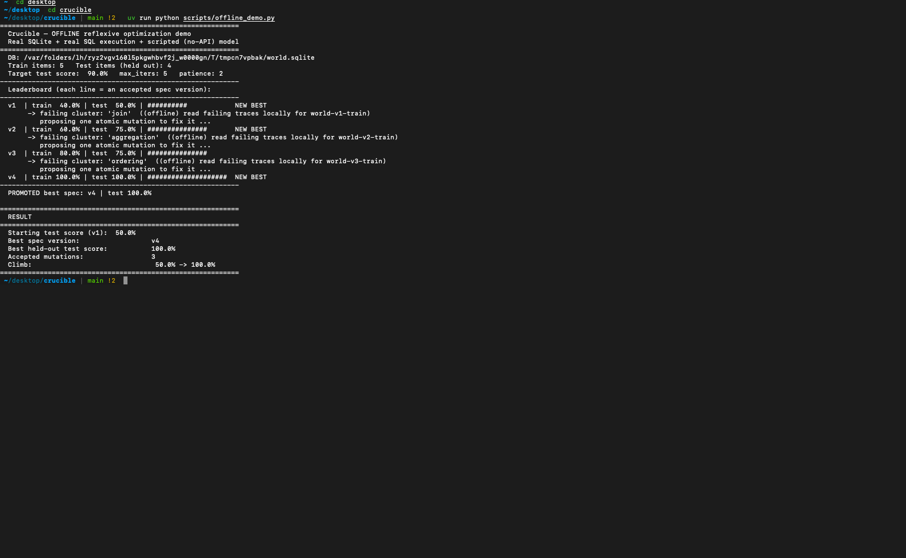
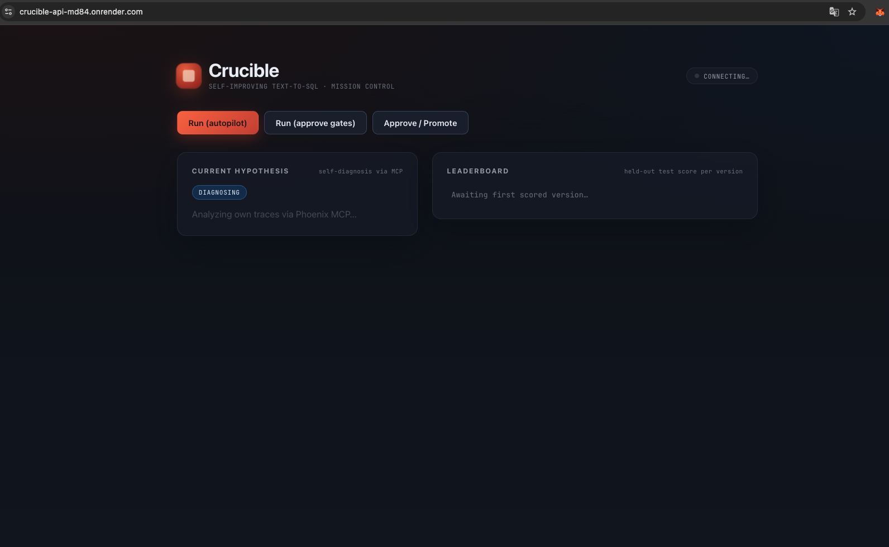

Builds and self-optimizes text-to-SQL agents.
One database in → one tuned, measured agent out.
Nudge a prompt, swap a few-shot, hope it generalizes. No signal on whether it actually got better.
"Looks right" is not a metric. Without execution against gold SQL, you're flying blind.
No way to find the dominant failure, fix it, and prove the fix held on data you didn't tune on.
The result: brittle agents, no leaderboard, no discipline — just vibes.
Given a database, Crucible drafts a candidate agent, scores it on real SQL, reads its own failing traces, and mutates — climbing a leaderboard until it clears the bar.
Generate a candidate text-to-SQL agent for the database.
Execution-match vs human gold SQL on a held-out test split.
Read its OWN failing traces via the Phoenix MCP server.
Form ONE atomic hypothesis about the dominant failure.
Edit prompt / few-shots, re-score, keep best-so-far.
Discipline: accept a mutation only if it helps TRAIN · report on a HELD-OUT test it never optimized against · early-stop on patience. Real ML hygiene, not prompt-fiddling.
3 accepted mutations. Each score is real SQL executed against a real SQLite DB, compared to gold.
JOIN → aggregation → ordering
3 · target bar 90% · cleared

Phoenix captures each scored experiment — inputs, generated SQL, gold, pass/fail.
Runs land as Phoenix experiments with real execution-match scores per item.
A Gemini agent reads its own failing experiment back out through the Phoenix MCP server — driving the next mutation.
This closes the loop: Gemini 3 reasons, Phoenix remembers, and the MCP server lets the agent introspect on its own evidence instead of a human eyeballing logs.

Current hypothesis, live leaderboard of accepted spec versions, and held-out test score per version — streamed via SSE.
Hosted crucible-api-md84.onrender.com
Repo github.com/Aankirz/Crucible